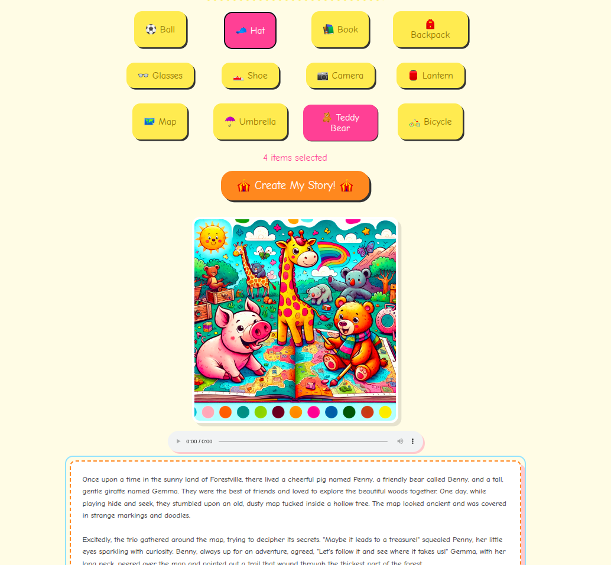

AI Storytime Generator
A playful web app that lets kids pick animals and objects to instantly generate short, structured stories with matching cartoon images and narrated audio.

A playful web app that lets kids pick animals and objects to instantly generate short, structured stories with matching cartoon images and narrated audio.